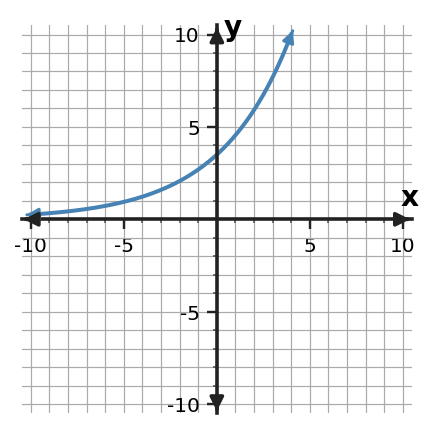

Algebra Practice 7.2 :::: Set 2
1. A bacteria colony begins with 125 cells and decreases by 15% each hour. Write an exponential equation for the amount after $t$ hours.
2. For $f(x)=15(\frac{9}{10})^x$, identify the initial value and the growth or decay factor.
3. A quantity begins at 200 and increases by 12% per period. Write a model for its value after $t$ periods.
4. A quantity begins at 800 and decreases by 15% per period. Write a model for its value after $t$ periods.
5. Use $f(x)=8(\frac{3}{2})^x$ to find $f(4)$.
6. An exponential function has $f(0)=16$ and $f(2)=4$. The factor is positive. Determine the per-unit factor and write the function.
7. The graph below is consistent with a model whose $y$-intercept is 2.5. Compare the candidates $y=2.5(1.4)^x$ and $y=1.4(2.5)^x$. Which equation fits the graph more directly? Use the $y$-intercept first, then check the multiplicative growth.

8. Write an exponential equation of the form $y=a(b)^x$ for the table.
| x | y |
|---|---|
| 0 | $\displaystyle 4$ |
| 1 | $\displaystyle \frac{16}{3}$ |
| 2 | $\displaystyle \frac{64}{9}$ |
| 3 | $\displaystyle \frac{256}{27}$ |
9. Build an exponential model $f(x)=a(b)^x$ with $f(0)=8$ and $f(3)=1$. Use a positive factor.
10. Write an exponential equation of the form $y=a(b)^x$ for the table.
| x | y |
|---|---|
| 0 | $\displaystyle 7$ |
| 1 | $\displaystyle \frac{35}{4}$ |
| 2 | $\displaystyle \frac{175}{16}$ |
| 3 | $\displaystyle \frac{875}{64}$ |
11. A town population begins with 150 people and increases by 15% each year. Write an exponential equation for the amount after $t$ years.
12. For $f(x)=20(\frac{4}{5})^x$, identify the initial value and the growth or decay factor.
13. A quantity begins at 75 and increases by 20% per period. Write a model for its value after $t$ periods.
14. A quantity begins at 90 and decreases by 30% per period. Write a model for its value after $t$ periods.
15. Use $f(x)=4(2)^x$ to find $f(5)$.
16. An exponential function has $f(0)=4$ and $f(2)=16$. The factor is positive. Determine the per-unit factor and write the function.
17. The graph below is consistent with a model whose $y$-intercept is 3.5. Compare the candidates $y=3.5(1.3)^x$ and $y=1.3(3.5)^x$. Which equation fits the graph more directly? Support your choice with one intercept feature and one growth feature.

18. Write an exponential equation of the form $y=a(b)^x$ for the table.
| x | y |
|---|---|
| 0 | $\displaystyle 10$ |
| 1 | $\displaystyle \frac{20}{3}$ |
| 2 | $\displaystyle \frac{40}{9}$ |
| 3 | $\displaystyle \frac{80}{27}$ |
19. Solve $(x+3)(x-6)=0$ and state the two zeros.
20. A quadratic model is $h(t)=(t+5)(t-3)$. Find the zeros. If $t$ represents time, identify which zero(s) could be meaningful when $t\ge 0$.
21. Use the zero-product property to solve $(4x-8)(x+1)=0$.
22. Factor $\displaystyle 6x^2+9x$ completely by removing the greatest common factor.
23. Factor $\displaystyle 20a^3-30a^2$ completely using the greatest common factor.
24. A student claims $\displaystyle 9 x^{3} + 12 x^{2}=3x^{2}(3x+4)$. Determine whether the claim is correct. Verify by multiplication and, if needed, give the correct factored form.